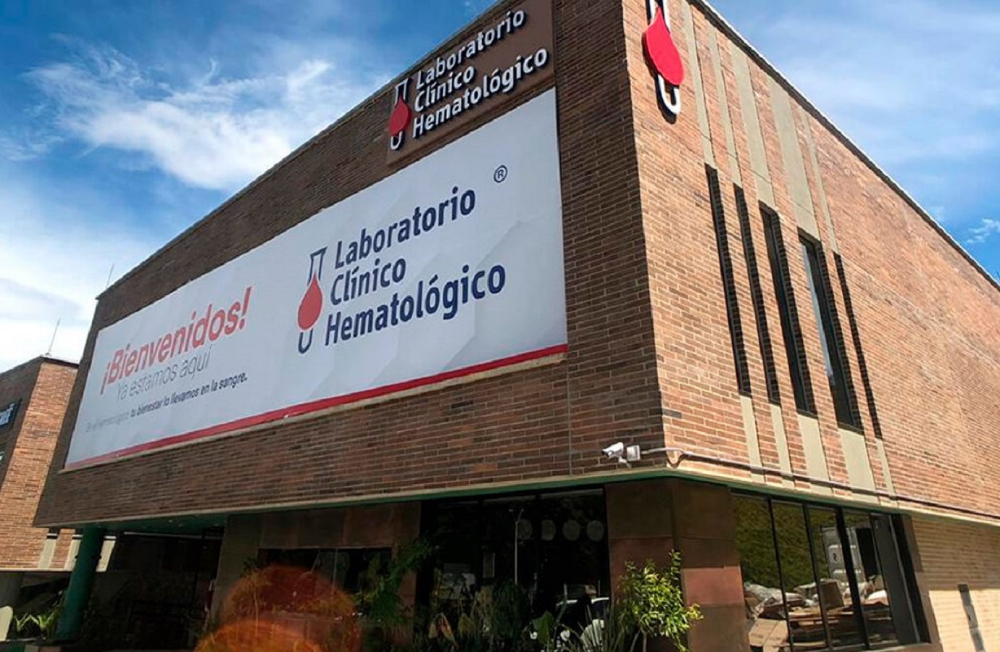

El Técnico en Laboratorio Clínico y Anatomía Patológica, se desempeña en
Hospitales
Hospitales como Publicas son centros donde se desempeña nuestro Egresado.

Clinicas
Clinicas como Privadas son centros donde se desempeña nuestro Egresado.

Laboratorios Clinicos
Laboratorios Clinicos donde se desempeña nuestro Egresado puede ser publica o privada.
Centro de Diagnóstico
Centros de Diagnosticos en donde tambien se desempeña nuestro Egresado